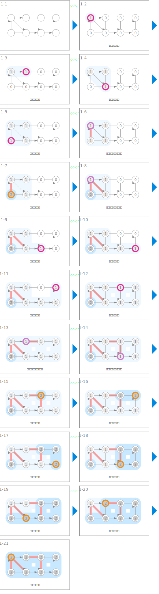

符号
| 数据 | ||
|---|---|---|
 |
节点的访问状态 | color |
| 深度优先搜索 | ||
|---|---|---|
 |
访问节点 | color[u] ← GRAY |
 |
完成对节点的访问 | color[u] ← BLACK |
| 检测到回溯边 | ||
| 表示回溯边 | ||
 |
扩展已访问节点的组的范围 | color 为 GRAY 的节点 |
 |
扩展已完成访问的节点的组的范围 | color 为 BLACK 的节点 |
动画
深度优先搜索
